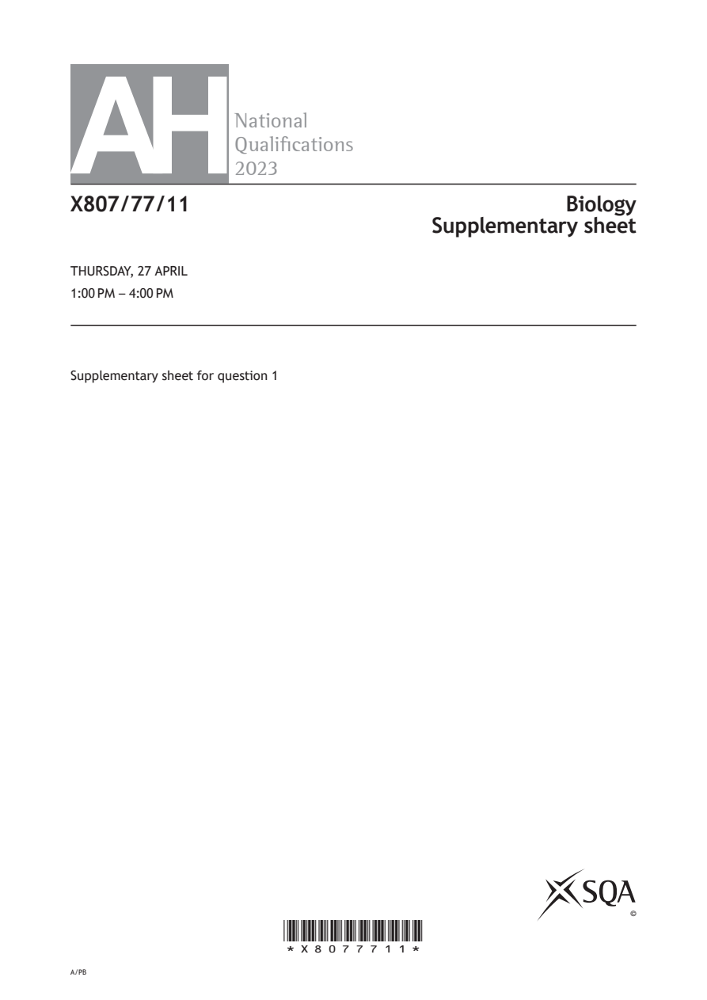
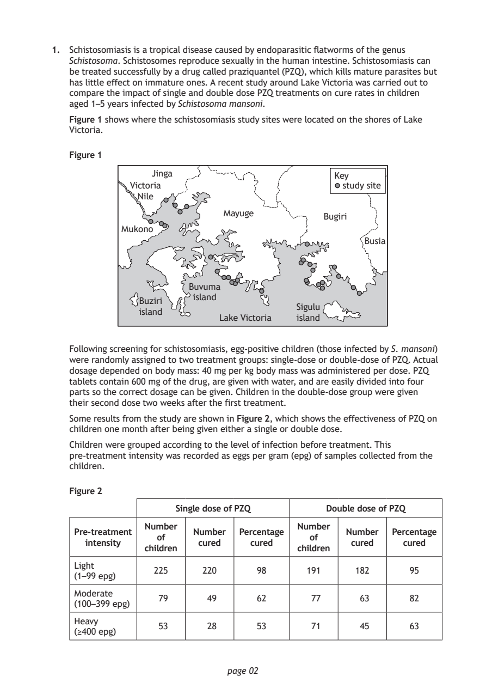
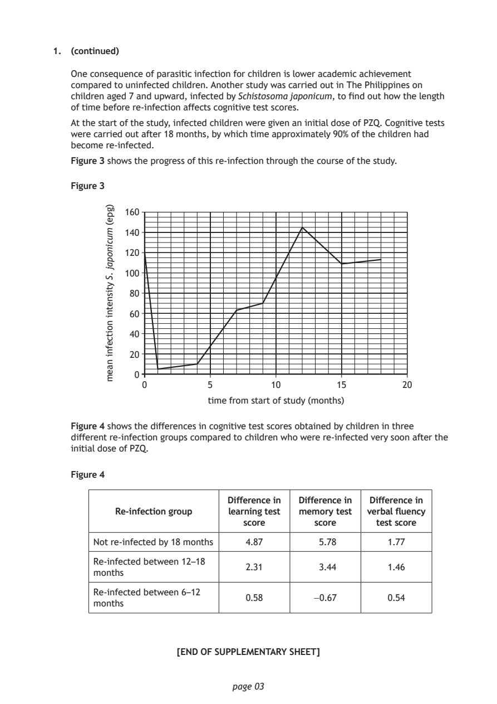

Source: SQA / Qualifications Scotland. This is a StemInteract HTML companion, not an official HTML edition. Use the original images for figures, graphs and table layout.
PDF page 1

Selectable page text
AH
National
Qualications
2023
X807/77/11 Biology
Supplementary sheet
THURSDAY, 27 APRIL
1:00 PM – 4:00 PM
Supplementary sheet for question 1
©
*X8077711*
A/PBPDF page 2

Selectable page text
1. Schistosomiasis is a tropical disease caused by endoparasitic flatworms of the genus
Schistosoma. Schistosomes reproduce sexually in the human intestine. Schistosomiasis can
be treated successfully by a drug called praziquantel (PZQ), which kills mature parasites but
has little effect on immature ones. A recent study around Lake Victoria was carried out to
compare the impact of single and double dose PZQ treatments on cure rates in children
aged 1–5 years infected by Schistosoma mansoni.
Figure 1 shows where the schistosomiasis study sites were located on the shores of Lake
Victoria.
Figure 1
Jinga Key
Victoria study site
Nile
Mayuge
Bugiri
Mukono
Busia
Buvuma
island
Buziri
Sigulu
island
Lake Victoria island
Following screening for schistosomiasis, egg-positive children (those infected by S. mansoni)
were randomly assigned to two treatment groups: single-dose or double-dose of PZQ. Actual
dosage depended on body mass: 40 mg per kg body mass was administered per dose. PZQ
tablets contain 600 mg of the drug, are given with water, and are easily divided into four
parts so the correct dosage can be given. Children in the double-dose group were given
their second dose two weeks after the first treatment.
Some results from the study are shown in Figure 2, which shows the effectiveness of PZQ on
children one month after being given either a single or double dose.
Children were grouped according to the level of infection before treatment. This
pre-treatment intensity was recorded as eggs per gram (epg) of samples collected from the
children.
Figure 2
Single dose of PZQ Double dose of PZQ
Number Number
Pre-treatment Number Percentage Number Percentage
of of
intensity cured cured cured cured
children children
Light
225 220 98 191 182 95
(1–99 epg)
Moderate
79 49 62 77 63 82
(100–399 epg)
Heavy
53 28 53 71 45 63
(≥400 epg)
page 02PDF page 3

Selectable page text
1. (continued)
One consequence of parasitic infection for children is lower academic achievement
compared to uninfected children. Another study was carried out in The Philippines on
children aged 7 and upward, infected by Schistosoma japonicum, to find out how the length
of time before re-infection affects cognitive test scores.
At the start of the study, infected children were given an initial dose of PZQ. Cognitive tests
were carried out after 18 months, by which time approximately 90% of the children had
become re-infected.
Figure 3 shows the progress of this re-infection through the course of the study.
Figure 3
time from start of study (months)
page 03
)gpe(
mucinopaj
.S
ytisnetni
noitcefni
naem
160
140
120
100
80
60
40
20
0
0 5 10 15 20
Figure 4 shows the differences in cognitive test scores obtained by children in three
different re-infection groups compared to children who were re-infected very soon after the
initial dose of PZQ.
Figure 4
Difference in Difference in Difference in
Re-infection group learning test memory test verbal fluency
score score test score
Not re-infected by 18 months 4.87 5.78 1.77
Re-infected between 12–18
2.31 3.44 1.46
months
Re-infected between 6–12
0.58 −0.67 0.54
months
[END OF SUPPLEMENTARY SHEET]PDF page 4

Selectable page text
[BLANK PAGE]
DO NOT WRITE ON THIS PAGE
page 04